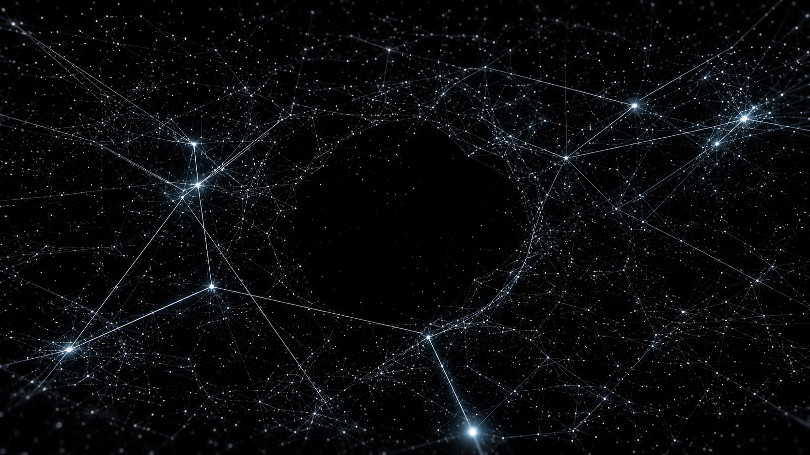
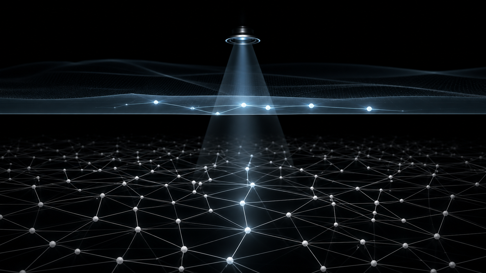
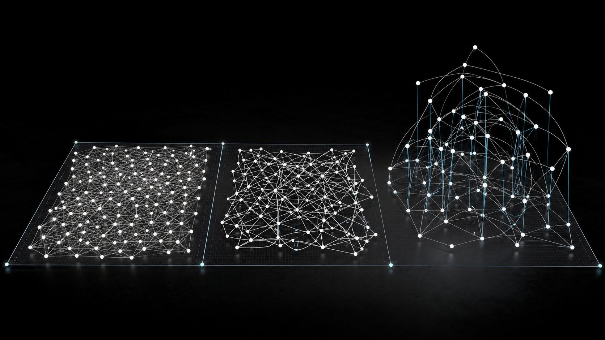
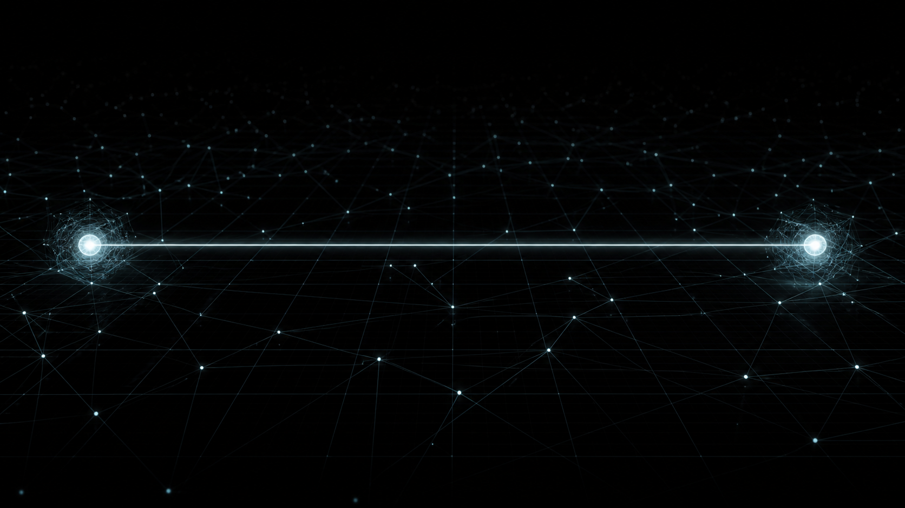
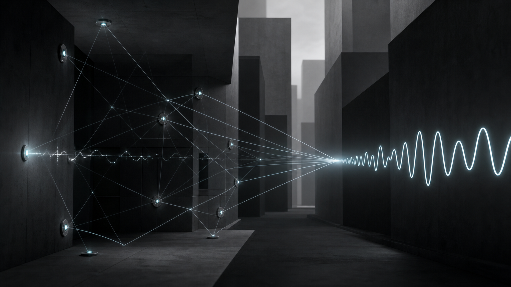

시간은 없다.연결만 있다.
바버리안 연결망 모델정적 관계망으로서의 양자 비국소성 해석

초록
본 논문은 양자역학의 비국소성과 관측 문제를 위한 바버리안 연결망 모델(Barbourian Connectivity Model, BCM)을 제안합니다. 본 모델은 하나의 강한 명제에서 출발합니다 — 자연에는 시간이 없습니다. 연결만 있습니다.
본 모델에서 자연은 점들의 정적 무한 연결망이며, 각 점은 다른 모든 점과 복소 진폭 $a_{ij}$ 로 잠재적으로 연결됩니다. 시간은 자연 좌표가 아니라, 관측자가 이 정적 관계망의 다른 배치들을 광속 $c$ 안에서 차례로 만나면서 자기 인지로 정렬한 산물입니다. 동시성은 같은 시간 좌표를 갖는 사건이 아니라, 두 점 사이에 연결이 존재한다는 사실 그 자체로 정의되며 거리·관측자·시간 좌표와 무관합니다.
본 모델은 여섯 공리(자연 3 + 관측자 2 + 한계 1)로 정식화됩니다. Bell-Aspect(2022 노벨물리학상)가 실험적으로 확인한 양자 비국소성은 본 모델에서 설명되어야 할 역설이 아니라 자연 공리 3에서 직접 도출되는 따름정리로 해석됩니다. 시공간 비틀림은 자연의 단절이 아니라 관측자의 광속 정렬이 만든 인지적 차이로 재해석됩니다.
본 모델은 Julian Barbour의 무시간 우주론, Carlo Rovelli의 관계론적 양자역학, Wheeler-DeWitt 방정식의 무시간성을 합류점으로 두며, 학계에 두 가지를 추가로 기여합니다 — 그래프 임베딩 정리에 기반한 꼬임 임계 공리, 그리고 "연결 = 동시성"의 제3 동시성 정의(뉴턴 절대시간·아인슈타인 관성계 상대성 어느 쪽과도 다른 위치). 본 모델은 빛보다 빠른 정보전달을 주장하지 않으며 기존 양자역학의 관측 예측을 보존합니다.
본 모델이 주장하지 않는 것
본 모델을 읽기 전에 먼저 명시합니다. 다음은 본 모델이 주장하지 않는 항목입니다.
| 주장하지 않습니다 | 본 모델의 입장 |
|---|---|
| 빛보다 빠른 정보전달 | 정보는 관측자 수준에서 광속 $c$로 정렬됩니다. 자연의 동시성은 정보 채널이 아닙니다 |
| 일반상대론 곡률의 부정 | 관측자 정렬 차이는 일반상대론 곡률과 양립 가능합니다 |
| 모든 양자현상의 완전 설명 | 본 모델은 양자 비국소성의 한 관계론적 해석을 제안합니다 |
| 기존 양자역학의 오류 | 본 모델은 기존 양자역학의 관측 예측을 보존합니다 |
| 의식의 물리화 | 본 모델은 관측자를 물리계로 다루나 의식 자체를 모델링하지 않습니다 |
| Born 규칙의 외부 유도 | Born 규칙은 본 모델에서 공리 5로 채택되며 외부 유도는 후속 작업으로 남깁니다 |
본 모델은 이러한 제한을 통해 학계 검증 가능 영역 안에 머무릅니다.
시간 문제의 막다른 골목
물리학은 400년간 시간을 두 번 정의했습니다.
뉴턴은 시간을 절대적·균일한 흐름으로 정의했습니다. 모든 관측자에게 같은 시간이 흐르고, 동시성은 같은 시간 좌표를 갖는 사건들의 관계였습니다. 이 정의는 1905년에 무너졌습니다.
아인슈타인은 시간을 관성계 의존적인 좌표로 재정의했습니다. 동시성은 관측자의 운동에 따라 달라지지만, 시간 변수 자체는 여전히 자연의 좌표로 남았습니다. 이 정의는 1964년 Bell 정리와 2022년 Aspect-Clauser-Zeilinger 노벨실험(Bell 부등식의 결정적 위반 증명)으로 한계가 드러났습니다 — 양자 얽힘은 거리와 무관한 상관관계를 보여주는데, 시간 변수를 보존한 어떠한 국소이론도 이를 설명할 수 없습니다.
학계의 응답은 세 갈래로 갈렸습니다.
첫째, 다세계 해석(Everett 1957). 시간을 보존하되 우주를 분기시킵니다. 비국소성을 분기 우주들 사이의 결정론으로 우회합니다.
둘째, 관계론적 양자역학(Rovelli 1996, Adlam-Rovelli 2022 Cross-Perspective Links 보완). 시간을 관측자 의존으로 두고 물리량을 관계로 정의합니다. 그러나 동시성의 정의 문제는 여전히 남습니다.
셋째, 무시간 우주론(Wheeler-DeWitt 1967, Barbour 1999, Barbour 2020 Janus Point). 시간 자체를 자연에서 제거합니다. Wheeler-DeWitt 방정식은 우주 전체 파동함수에 시간 도함수가 없음을 보입니다 — $\hat{H}|\Psi_{\text{universe}}\rangle = 0$. Barbour는 우리가 보는 것이 시간 흐름이 아니라 Platonia 위의 다른 배치들이라고 주장했습니다.
세 갈래 모두 부분적 성공을 거두었으나, 시간을 부정한 뒤 동시성을 어떻게 정의할 것인가라는 결정적 문제는 답하지 못했습니다. Barbour의 무시간 우주론은 동시성을 폐기하고, Page-Wootters 메커니즘은 동시성을 부분계 상관으로 우회하며(Moreva 2014 광학 실험으로 검증됨), Rovelli의 RQM은 동시성을 관측자 상대성으로 분산시킵니다.
본 논문은 이 막다른 골목에 새 좌표를 제안합니다. 시간을 부정한 채 동시성을 보존하되, 동시성을 시간 좌표가 아닌 연결 그 자체로 재정의합니다.
본 모델의 단일 명제
이 한 줄은 양자역학의 가장 난해한 세 문제를 하나의 관계론적 틀 안에서 재정식화합니다.
| 기존 문제 | 본 모델의 해소 |
|---|---|
| 양자 얽힘이 어떻게 거리 무관한가 | 자연에 거리 좌표는 있으나 연결 강도와 무관합니다. 얽힘은 모델 내부의 직접 귀결입니다 |
| 측정 시점에 무엇이 "붕괴"하는가 | 자연에는 붕괴가 없습니다. 관측자가 자기 인지에 부분 연결을 정렬할 뿐입니다 |
| 시간의 화살은 어디서 오는가 | 자연이 아니라 관측자의 인지 진화에서 옵니다 |
본 모델은 여섯 공리로 정식화됩니다.
| 공리 | 층위 | 한 줄 |
|---|---|---|
| 1. 무한 연결 | 자연 | $\forall p_i, p_j \in V$, $a_{ij} \in \mathbb{C}$ |
| 2. 꼬임 임계 | 자연 | $\text{cr}(\mathcal{G}_i^{(n)}) \leq V_d(L)$, 위배 시 차원 증가 |
| 3. 동시성 = 연결 | 자연 | $\text{Sim}(p, q) \iff a_{pq} \neq 0$ |
| 4. 관측자 만남 | 관측자 | $\tau_O(j) = \lambda_j + d_O(j)/c$ |
| 5. 확률 관측 | 관측자 | $P = \|\mathcal{A}\|^2 / \sum \|\mathcal{A}\|^2$ |
| 6. 슈뢰딩거 매개변수 | 한계 | 슈뢰딩거 방정식의 $t$ 는 관측자 내부 매개변수 |
자연 3공리는 자연의 구조를 규정하고, 관측자 2공리는 관측자가 그 자연을 어떻게 만나는지를 기술하며, 한계 1공리는 기존 양자역학과의 접합점을 명시합니다.
두 층의 분리 — 모델의 구조적 결정
본 모델의 가장 큰 구조적 특징은 자연 층과 관측자 층의 변수 분리입니다.

| 층 | 변수 | 성격 |
|---|---|---|
| 자연 | $a_{ij}$, $\lambda_j$, $V$, $d$ (공간 차원 수) | 정적, 시간 없음, 관측자 무관 |
| 관측자 | $\tau_O$, $d_O(j)$, $P(j|i)$, 인지된 시간 흐름 | 동적으로 보임, 광속 의존, 관측자별 |
기존 양자역학 해석들이 헷갈리게 만든 것은 이 두 층을 한 변수에 섞어놓았기 때문입니다. 예를 들어 슈뢰딩거 방정식의 $t$ 는 자연 시간으로 쓰이지만, 동시에 측정 시각이라는 관측자 변수로도 쓰입니다. 본 모델은 자연 변수($\lambda$)와 관측자 변수($\tau_O$)를 별도 기호로 표기합니다.
이 분리는 단순한 표기법이 아닙니다. 자연 층의 명제는 거리·관측자·시간에 무관해야 하고, 관측자 층의 명제는 광속에 의해 정렬되어야 합니다. 두 층의 명제를 섞으면 모순이 발생합니다 — 이것이 EPR 역설의 핵심 원인으로 해석됩니다.
핵심 공리의 정식화
4.1 공리 1 — 무한 연결
자연의 근본 단위는 점입니다. 점은 입자가 아니라 잠재 연결의 교차점입니다.
모든 점은 다른 모든 점과 잠재적으로 연결됩니다. 연결은 단순 간선이 아니라 복소 진폭입니다.
이 정의는 Feynman 경로적분(1948)의 합과 Rovelli-Smolin 스핀 네트워크(1995)의 그래프 구조를 합친 형식입니다. 그러나 본 모델은 진폭을 시간 진화의 연산자가 아니라 자연의 정적 속성으로 둡니다 — 이 점이 핵심 차이입니다.
4.2 공리 2 — 꼬임 임계
분기 깊이 $n$, 평균 차수 $k$ 인 부분 관계망 $\mathcal{G}_i^{(n)}$ 에 대해, 관측 가능 차원 $d_\text{obs}$ 의 공간 수용량을 $V_d(L)$ 이라 두면:
여기서 $\text{cr}$ 은 그래프의 crossing number(Kuratowski 1930, Robertson-Seymour graph minor theorem)입니다. 이 조건이 위배되는 임계 깊이 $n_c(k, d_\text{obs})$ 가 존재하며, $n \geq n_c$ 에서 그래프는 그 차원에 꼬임 없이 임베딩될 수 없습니다.
본 모델의 핵심 직관은 강합니다: 연결 밀도가 임계 수준을 넘어서면, 주어진 차원 안에서는 꼬임이 강제되고 이를 해소하는 추가 차원이 요구됩니다. 이 추가 차원은 관측자에 의해 시간이라 명명되지만, 자연 수준에서는 또 하나의 공간 차원입니다.

이 공리는 Barbour의 무시간 우주론에 없는 명제입니다. Barbour는 차원을 주어진 것으로 두었습니다. 본 모델은 차원의 발생 동기를 그래프 임베딩 정리로 정식화합니다 — 이것이 학계에 대한 첫 번째 추가 기여 후보입니다.
4.3 공리 3 — 동시성 = 연결
두 점 $p, q$ 에 대해 동시성 관계 $\text{Sim}(p, q)$ 는:
$\text{Sim}$ 은 시간 좌표 $t$ 의 함수가 아니며, 거리 $d(p, q)$ 의 함수도 아니며, 관측자에 의존하지 않습니다.
이 정의는 학계의 두 동시성 정의 어느 쪽과도 다릅니다.
뉴턴 동시성: $\text{Sim}_N(p, q) \iff t(p) = t(q)$. 시간 좌표 의존.
아인슈타인 동시성: $\text{Sim}_E(p, q) \iff t_O(p) = t_O(q)$ for observer $O$. 관측자 관성계 의존.
본 모델 동시성: $\text{Sim}(p, q) \iff a_{pq} \neq 0$. 연결 의존, 시간·거리·관측자 무관.
이것이 본 모델의 두 번째 추가 기여 후보입니다. 200년간 다뤄지지 않은 제3의 동시성 정의입니다.
따름정리 1 (얽힘의 직접 귀결): 양자 얽힘은 두 점이 $a_{pq} \neq 0$ 인 상태입니다. 거리 무관성은 정의의 따름입니다. EPR 역설은 시간 좌표를 전제했기에 역설로 보였을 뿐입니다.
따름정리 2 (Bell 부등식 위반의 자연스러움): Bell 부등식이 위반된다는 사실(Aspect 1982, 노벨물리학상 2022)은 본 모델에서 검증되어야 할 예외가 아니라 공리 3의 직접 예측입니다. 두 점이 연결되어 있으면 거리와 무관하게 상관이 존재합니다.
4.4 공리 4 — 관측자 만남
관측자 $O$ 는 정적 관계망 $\mathcal{G}_\infty$ 의 한 부분이며, 다른 배치들을 자신의 인지 안에서 차례로 만납니다. 만남의 순서는 광속 $c$ 로 정보를 받는 물리적 한계에 의해 정렬됩니다.
- $\lambda_j$: 점 $p_j$ 가 자연 관계망에서 차지하는 배치 인덱스(시간 좌표가 아닙니다)
- $d_O(j)$: 관측자 $O$ 와 점 $p_j$ 사이의 공간 거리
- $c$: 광속
- $\tau_O(j)$: 관측자 $O$ 의 인지가 점 $p_j$ 를 만나는 정렬 위치
$\tau_O$ 는 자연 좌표가 아니며, 관측자의 내부 매개변수입니다. 두 관측자는 같은 $\lambda_j$ 에 대해 다른 $\tau_O$ 를 가질 수 있습니다 — 이것이 시간의 상대성으로 인식됩니다.
4.5 공리 5 — 확률 관측
관측자가 점 $i$ 에서 점 $j$ 와의 연결을 관측할 확률은 모든 경로 진폭의 합의 제곱입니다.
전체 경로 진폭은 행렬 $A$ 의 거듭제곱 시리즈로 표현됩니다.
행렬식으로 압축하면:
여기서 $\beta$ 는 깊은 경로의 영향력을 조절하는 감쇠 계수입니다. 직접 연결 + 길이 $n$ 의 모든 간접 경로가 결합되어 간섭 패턴을 생성합니다.
4.6 공리 6 — 슈뢰딩거 매개변수의 한계
슈뢰딩거 방정식의 시간 도함수는 자연 시간이 아니라 관측자 내부 매개변수입니다.
이는 Wheeler-DeWitt 방정식과 정합적입니다 — 우주 전체 파동함수는 시간 도함수를 포함하지 않습니다.
본 모델은 슈뢰딩거 방정식을 부정하지 않으며, $t$ 의 해석을 자연 시간에서 관측자 매개변수로 옮길 뿐입니다. Page-Wootters 메커니즘(1983)이 부분계 얽힘에서 시간을 발생시키는 방식이 본 공리의 한 구체화입니다 — Moreva et al. 2014 광학 실험이 이를 검증했습니다.
시간의 부정과 단방향성의 해소
5.1 자연에는 시간이 없습니다
본 모델은 Barbour의 무시간 우주론을 채택합니다. 자연 관계망 $\mathcal{G}_\infty$ 는 정적입니다. 모든 $a_{ij}$ 는 영원히 고정되어 있습니다. 변화는 자연에 없습니다.
이는 직관에 반합니다 — 우리는 매일 변화를 경험합니다. 본 모델의 답: 우리가 경험하는 변화는 자연의 속성이 아니라, 우리 인지가 자연 관계망의 다른 배치들을 차례로 만나는 정렬 방식입니다. Barbour의 표현으로 "우리는 시간이 흐르는 것을 보지 않습니다. 우리는 다른 배치들을 봅니다."
5.2 시간의 화살은 어디서 오는가
엔트로피는 증가하고, 우리는 과거를 기억하지만 미래를 기억하지 않습니다. 자연에 시간이 없다면 이 단방향성은 어디서 옵니까?
본 모델의 답은 두 단입니다.
1단: 단방향성은 자연의 속성이 아닙니다. Barbour-Koslowski-Mercati(2014, 2020 Janus Point)는 자연 관계망에 Janus 점이 있고, 그 점에서 양방향으로 복잡도(entaxy)가 증가함을 수학적으로 보였습니다. 자연 자체는 단방향이 아닙니다.
2단: 우리가 단방향으로 인지하는 것은 인지 시스템의 진화 결과입니다. 엔트로피 그래디언트가 큰 환경에서 진화한 모든 정보 처리 시스템은 같은 방향으로 정렬할 수밖에 없습니다 — 그것이 정보를 압축하고 예측을 가능하게 하는 유일한 방식이기 때문입니다.
이 답은 단방향성 문제를 자연 물리에서 인지과학·정보이론·진화론으로 옮깁니다. 본 모델은 자연 수준에서 시간의 화살을 주장하지 않으므로, "자연 법칙이 단방향성을 어떻게 만드는가"라는 질문이 본 모델 안에서는 발생하지 않습니다.
5.3 모든 관측자가 같은 방향으로 인지하는 이유
서로 다른 인지 시스템이 왜 같은 시간 방향을 갖는가는 진화론적 공통 조건의 문제입니다. 우주의 거시적 엔트로피 그래디언트는 모든 부분 인지에 같은 정렬 압력을 가합니다. 이는 본 모델의 한계 내부에서 답할 수 있는 문제는 아니며, 신경과학·인지진화론의 영역으로 남깁니다.
동시성의 재정의
6.1 관측 비틀림은 동시성의 부재가 아닙니다
두 점 $m, n$ 이 자연 관계망에서 $\text{Sim}(m, n)$ 즉 $a_{mn} \neq 0$ 으로 연결되어 있다고 두겠습니다.
자연 수준: 이 둘은 동시입니다. 거리 $d_O(m), d_O(n)$ 과 무관합니다.
관측자 수준: 관측자 $O$ 는 광속 $c$ 로 정보를 받으므로 두 점을 다른 $\tau_O$ 에 만납니다.
본 모델은 이 $\Delta \tau_O$ 를 동시성의 부재로 해석하지 않습니다. 이는 관측자의 정렬 차이일 뿐이며, 두 점은 자연에서 여전히 동시이고 연결되어 있습니다.
이 식은 기존 상대론의 동시성 상대성과 같은 형식을 갖지만, 해석이 다릅니다. 상대론은 "동시성이 관성계마다 다르다"고 말하며 시간 변수의 관성계 의존성을 봅니다. 본 모델은 시간 변수를 부정하므로, 관성계마다 다른 것은 동시성이 아니라 관측자의 정렬 방식입니다.
6.2 양자 얽힘과 본 모델의 관계
Bell(1964) 정리와 Aspect-Clauser-Zeilinger(2022 노벨물리학상) 실험은 양자 얽힘이 어떠한 국소 숨은변수 이론으로도 설명될 수 없음을 보였습니다. 본 모델은 숨은변수 이론이 아닙니다. 본 모델은 국소성 자체를 자연 수준에서 부정합니다.
자연 관계망에 거리 좌표는 있지만 그것은 점들 사이의 연결 강도와 무관합니다. 두 점이 광년 떨어져 있어도 $a_{pq} \neq 0$ 이면 동시이며, 이것이 본 모델이 보는 자연입니다. 거리 $d_O(p, q)$ 는 관측자 $O$ 가 광속 $c$ 로 정보를 받기 위해 통과해야 할 거리지, 두 점의 자연적 분리가 아닙니다.

비국소성은 자연의 예외가 아니라 자연의 기본 구조로 놓입니다. 국소성이야말로 관측자의 광속 한계가 만들어낸 인지적 표현입니다.
양자 현상이 따름정리가 되는 과정
7.1 얽힘 — 직접 귀결
본 모델에서 얽힘은 설명할 대상이 아니라 공리 3의 직접 귀결입니다. 두 점 $a, b$ 가 $a_{ab} \neq 0$ 으로 연결되어 있으면, $\text{Sim}(a, b)$ 입니다. 거리와 무관하게 동시입니다. 따라서 한쪽을 관측하면 다른 쪽의 조건부 확률이 즉시 정해집니다.
빛보다 빠른 통신은 발생하지 않습니다. 정보가 $a$ 에서 $b$ 로 이동한 것이 아니라, $a$ 와 $b$ 가 처음부터 같은 연결망의 두 끝이었기 때문입니다. 본 모델은 양자정보이론의 무신호 원칙(no-signaling theorem)과 완전히 양립합니다.
수학적으로는 두 점 $a, b$ 의 공동상태가 분리 불가능한 형태를 갖습니다.
그러나 주변확률 $P(n) = \sum_m |B_{mn}|^2$ 는 한쪽 관측에 의해 변하지 않습니다 — 무신호 원칙 보존.
7.2 중첩
점 $p_i$ 의 상태는 자신의 모든 잠재 연결의 분포입니다.
중첩은 다중 연결 가능성의 공존이며, 자연의 정상 상태입니다. "중첩 붕괴"는 발생하지 않으며, 관측자 정렬에서 그 중 일부만 인지되는 것입니다.
7.3 간섭
점 $i$ 에서 점 $j$ 로 가는 경로는 직접 연결뿐 아니라 모든 간접 경로를 포함합니다.
복수 경로의 위상이 합성되어 간섭이 발생합니다. 이중슬릿 실험은 본 모델 안에서 자연스럽게 해석됩니다 — 입자가 어느 슬릿을 통과했는가가 아니라, 두 슬릿을 통과하는 모든 경로의 진폭이 합성된 결과를 관측자가 만나는 것입니다.
7.4 관측과 소위 "붕괴"
관측자 $O$ 가 자신의 인지 안에서 한 배치를 만나는 것은 자연 관계망의 붕괴가 아닙니다. 관측자가 자신과 연결된 부분만 인지에 정렬한 결과입니다.
"붕괴"는 자연 사건이 아니라 관측자의 부분 정렬입니다. 자연 관계망 $\mathcal{G}_\infty$ 는 관측 이후에도 변하지 않습니다.
기존 해석과의 정확한 좌표
본 모델은 학계 여섯 흐름의 합류점에 위치합니다. 각각과의 차이를 정확히 명시합니다.
| 기존 해석 | 본 모델과 공유하는 점 | 본 모델이 다른 점 |
|---|---|---|
| 코펜하겐 해석(Bohr, Heisenberg) | 관측의 역할 인정 | 관측을 자연 사건이 아닌 관측자 정렬로 봄 |
| 다세계 해석(Everett 1957) | 측정 시 자연이 분기하지 않음 | 분기 우주를 도입하지 않음. 단일 정적 관계망 |
| 관계론적 양자역학(Rovelli 1996, Adlam-Rovelli 2022) | 물리량의 관계 의존성 | 동시성을 관계로 재정의(RQM은 동시성을 분산) |
| 무시간 우주론(Wheeler-DeWitt 1967, Barbour 1999, 2020) | 시간 자체의 부정 | 동시성을 보존하고 연결로 재정의(Barbour는 폐기) |
| ER=EPR(Maldacena-Susskind 2013, 2024 알지브릭 확장) | 얽힘과 시공간 연결의 동일성 | 웜홀 기하학을 도입하지 않음. 그래프 임베딩으로 처리 |
| Wolfram 하이퍼그래프(2020, 2024 On Nature of Time) | 관계망과 관측자 슬라이스 | 동역학(업데이트 규칙)을 도입하지 않음. 정적 자연 |
본 모델이 학계에 추가하는 두 가지 좌표:
첫째, 그래프 임베딩 정리를 차원 발생의 동기로 도입하는 강한 기여 후보입니다. Kuratowski 1930, Robertson-Seymour graph minor theorem(1983-2004 20편 시리즈)이 제공하는 수학적 기반을 자연 차원의 발생 메커니즘으로 활용합니다. 학계의 어떤 양자중력 모델도 이 결합을 시도하지 않았습니다.
둘째, 연결 = 동시성의 제3 동시성 정의입니다. 뉴턴(절대시간 의존)도 아닌, 아인슈타인(관성계 의존)도 아닌, 연결 의존의 동시성. 이 정의는 검색 가능한 학계 문헌에서 같은 형태로 확인되지 않습니다.
검증 가능 명제와 첫 실험 설계
본 모델은 기존 양자역학의 관측 예측을 보존하므로, 직접적 falsification은 어렵습니다. 그러나 본 모델만 예측하고 기존 해석들은 예측하지 않는 효과가 존재하며, 그것이 첫 실험적 검증 후보가 됩니다.
9.1 첫 검증 실험 — 분기 깊이 통제 결맞음 실험
원리. 공리 2(꼬임 임계)에서 도출됩니다. 부분 양자계의 분기 깊이 $n$ 을 임계 $n_c$ 아래로 유지하면, 그 시스템에서는 추가 차원(시간)이 발생하지 않으므로 디코히어런스가 발생하지 않거나 극도로 느려져야 합니다.
기존 양자역학의 어떤 해석도 이 효과를 예측하지 않습니다. 디코히어런스는 환경과의 얽힘으로 일반적으로 설명되며, 분기 깊이라는 구체적 임계는 본 모델 고유의 예측입니다.
예상 효과. 분기 깊이 $n$ 인 부분 양자계의 결맞음 시간 $T_2$ 는:
$n \to n_c$ 에서 $T_2$ 가 급격히 감소해야 합니다. $\alpha$ 는 모델 매개변수.
실험 설계. 분기 깊이를 통제 가능한 양자 시스템이 필요합니다. 후보 플랫폼:
| 플랫폼 | 현 결맞음 시간 | BCM 검증 적합성 |
|---|---|---|
| Transmon 큐비트(Aalto 2025: 1ms 기록) | $\sim 1$ ms | 분기 통제 어려움 |
| Trapped ion(1~10 ms) | $\sim 10$ ms | 큐비트 연결 그래프 통제 가능 |
| Photonic graph state | 임의 통제 가능 | 최적 후보 |
| Topological qubit(Microsoft 2025 진행 중) | 이론적 예측 | 본 모델과 자연 결합 |
프로토콜.
- Photonic graph state 또는 trapped ion 다체계 준비. 분기 깊이 $n$ 을 1, 2, 3, ... 으로 증가시키며 각각 결맞음 시간 측정.
- 측정된 $T_2(n)$ 곡선을 본 모델 예측($n_c$ 부근 급변)과 기존 디코히어런스 모델 예측(점진적 감소)과 비교.
- 결정적 차이가 $n = n_c$ 부근에서 나타나면 본 모델의 첫 실험적 증거가 됩니다.
예상 큐비트 수. 분기 차수 $k = 3$ 가정 시, $n_c$ 의 이론적 추정치는 약 $n_c \sim 4$. 따라서 최소 $3^4 = 81$ 노드의 그래프 상태가 필요합니다. 현재 photonic graph state 기술로 약 80~100 노드까지 구현 가능 — 실험적으로 도달 가능합니다.
필요 자원. 박사후 1명, 2년 일정, 기존 양자광학 실험실 협업 기준 약 $300K USD$ 추정.
9.2 보조 검증 — 동시성 = 연결 직접 시험
공리 3의 직접 시험은 거리가 매우 큰 두 얽힘 입자 쌍에서 본 모델 예측과 기존 양자역학 예측이 일치하는지 확인하는 것입니다. 본 모델은 거리 무관성을 자연으로 두므로, 임의로 큰 거리에서도 얽힘 상관이 유지되어야 합니다. 이미 Yin et al. 2017(Micius 위성, 1200km 양자 얽힘)이 이를 확인했습니다 — 본 모델은 추가 데이터를 제공하지 않으나, 기존 데이터와 정합적입니다.
9.3 본 모델이 falsify되는 시나리오
| 관측 결과 | 본 모델의 위치 |
|---|---|
| 분기 깊이 통제 시 $T_2(n)$ 곡선이 점진적이고 임계 없음 | 본 모델 falsify |
| Bell 부등식 위반이 어떤 거리에서 사라짐 | 본 모델 falsify |
| 슈뢰딩거 $t$ 가 관측자 매개변수가 아닌 자연 좌표임이 직접 증명 | 본 모델 falsify |
| 의식이 자연 변수로 들어가야 양자역학이 완성됨 | 본 모델 falsify(본 모델은 의식을 도입하지 않음) |
검증 가능한 응용 — 세 가지 축
본 절은 응용 후보를 넓게 나열하지 않고, 검증 가능성과 기술적 매력도가 동시에 높은 세 가지 축으로 압축합니다. BCM의 신뢰도 높은 1차 응용은 새로운 물리 효과의 선언이 아니라, 약하고 지연되며 반사된 관측값을 관계망으로 복원하는 계산 문제입니다.
응용 후보를 줄이는 이유는 명확합니다. 너무 많은 후속 기술을 나열하면 이론이 강해지는 것이 아니라, 오히려 모든 문제에 적용되는 느슨한 은유처럼 보일 위험이 있습니다. 따라서 본 논문에서는 기존 공학으로도 더 잘 설명되는 영역, 검증 경로가 먼 영역, 기술적 매력도가 낮은 영역을 제외합니다.
10.1 핵심 응용 — 관계망 기반 다중경로 신호 복원
BCM의 가장 현실적인 1차 응용은 다중경로 신호 복원입니다. 실내, 지하, 도심협곡, 수중, 우주 통신 환경에서는 직접 신호가 약하거나 끊기고, 반사·회절·지연 신호가 뒤섞입니다. 기존 접근은 일부 반사 성분을 잡음으로 제거하지만, 본 모델은 관측된 약신호들을 하나의 관계망 단면으로 보고 원신호를 복원하는 방향을 취합니다.

$P_G(x)$ 는 관계망 사전분포입니다. 여기에는 위성 궤도, 지형·건물 구조, 터널 형상, 과거 센서 로그, 주변 노드의 관측값, 가능한 반사 경로가 포함될 수 있습니다.
관계망 기반 다중경로 복원 엔진. 약한 직접 신호와 반사 신호를 함께 사용해 원신호 $\hat{x}$ 를 추정합니다. 기술 목표는 새로운 정보전달 채널의 창출이 아니라, 이미 도착한 불완전한 관측값의 복원입니다.
검증 방식. 동일한 수신 데이터에서 기존 다중경로 제거 방식, SLAM/센서퓨전 방식, 관계망 사전분포 기반 복원 방식을 비교합니다. 평가지표는 위치 오차, 신호 복원율, SNR 개선, 음영구간 회복 시간입니다.
가정 의존도: 약함. 검증 시점: 단기. 양자성과 무관한 고전 신호처리로도 검증 가능.
10.2 핵심 응용 — GPS-denied 자율성 레이어
두 번째 응용은 다중경로 신호 복원의 특수한 확장입니다. 위성신호가 약하거나 사라지는 도심협곡·실내·터널 환경에서 카메라, 관성측정, 전파 반사, 지도, 이전 궤적을 하나의 관계망으로 결합해 위치와 경로를 추정합니다.
이 기술은 새로운 센서의 발명이 아니라, 이미 존재하는 불완전한 관측값들을 관계망 단면으로 정렬하는 추정 레이어입니다. 자율주행, 휴머노이드 로봇, 터널 이동체처럼 위치 신뢰도가 곧 안전성과 직결되는 시스템에 적용 가능성이 있습니다.
$y_t$ 는 카메라·IMU·전파·지도·과거 궤적 관측값의 묶음이며, $G$ 는 환경 관계망입니다.
검증 방식. GNSS 정상구간, 약신호 구간, 완전 음영구간을 나누어 위치 오차와 재획득 시간을 비교합니다. 초기 검증은 차량·로봇 실험 이전에 공개 주행 데이터셋과 실내 로봇 데이터셋으로 수행할 수 있습니다.
가정 의존도: 약함~중간. 검증 시점: 단기~중기.
10.3 보조 응용 — 위상 기반 군집 동기화
세 번째 축은 독립적인 자연 시계의 상용화가 아니라, 분산 시스템의 clock drift와 관측 불일치를 줄이는 보조 응용입니다. 위성군, 로봇군, 차량군처럼 여러 노드가 서로 다른 지연과 잡음을 가진 상태에서 작동할 때, 시간 좌표의 완전 일치보다 위상·상관구조 정렬이 더 안정적인 기준이 될 수 있습니다.
이 응용은 기존 시간동기 프로토콜을 대체한다고 주장하지 않습니다. 오히려 기존 clock synchronization 위에 얹는 보정층으로 정의하는 편이 안전합니다.
검증 방식. 분산 노드의 clock drift, 패킷 지연, 관측 누락 조건을 만든 뒤, 기존 시간동기 방식과 관계망 위상 보정 방식을 비교합니다.
가정 의존도: 중간. 검증 시점: 중기.
10.4 과학 검증 축 — 분기 깊이 통제 결맞음 실험
분기 깊이 통제 결맞음 실험은 매력도가 가장 높지만, 본 절에서는 기술 응용이 아니라 과학 검증 축으로 둡니다. 이 실험은 § 9.1의 핵심 검증 후보이며, 성공할 경우 양자 메모리와 저전력 컴퓨팅에 함의를 줄 수 있습니다. 그러나 현 단계에서 이를 제품형 응용으로 제시하면 이론의 신뢰도를 해칠 수 있습니다.
따라서 본 논문의 응용 우선순위는 10.1과 10.2에 두고, 10.4는 장기 검증 과제로 분리합니다.
가정 의존도: 중간~강함. 검증 시점: 중기~장기.
10.5 삼체문제의 BCM 재정식화 — 시간 궤적에서 배치 연결망으로
삼체문제는 세 질량체 $m_1, m_2, m_3$ 의 초기 위치와 운동량이 주어졌을 때 이후의 궤적을 구하는 고전역학 문제입니다. 뉴턴역학에서 이는 다음 운동방정식으로 표현됩니다.
그러나 일반 삼체문제는 두체문제와 달리 일반 닫힌형 해를 갖지 않으며, 대부분의 초기조건에서 궤적은 비선형적·혼돈적으로 전개됩니다. 따라서 본 절에서 말하는 "풀이"는 기존 의미의 시간 함수 $\mathbf{r}_i(t)$ 를 닫힌형으로 제시하는 것이 아니라, BCM의 공리 구조 안에서 삼체문제를 시간 진화 문제가 아닌 정적 배치공간의 연결 선택 문제로 재정식화하는 것입니다. BCM은 자연을 정적 무한 연결망으로 두고, 시간은 관측자가 그 연결망의 배치들을 광속 한계 안에서 정렬해 만나는 내부 매개변수로 해석합니다. 또한 관측 확률은 전체 경로 진폭의 제곱으로 정의됩니다.
삼체의 하나의 배치를
라 하겠습니다. 여기서 $\alpha$ 는 시간 인덱스가 아니라 정적 관계망 안의 배치 노드입니다. 각 배치의 중력 퍼텐셜은
이고, 질량계량은
로 둡니다. 고정된 총에너지 $E$ 에서 두 배치 $Q_\alpha, Q_\beta$ 를 잇는 무시간 자코비 작용은 다음과 같습니다.
자코비-모페르튀 원리는 고정 에너지 계의 운동을 시간 매개변수 없이 배치공간의 측지선 문제로 바꾸는 정식화이므로, BCM의 "자연에는 시간이 없고 연결만 있다"는 구조와 직접 접속됩니다.
이제 두 배치 사이의 BCM 연결 진폭을
로 정의합니다. 여기서 $\rho_{\alpha\beta}$ 는 충돌 배제, 거리 감쇠, 관측 가능성 등을 반영하는 실수 가중치이며, $\hbar_{\mathrm{eff}}$ 는 위상을 무차원화하는 작용 단위입니다. 양자계가 아닌 고전 삼체계에 적용할 경우 $\hbar_{\mathrm{eff}}$ 는 물리적 플랑크 상수라기보다 연결망 위상 민감도를 정하는 모델 매개변수로 해석해야 합니다.
BCM의 전체 경로 진폭은 원래 공리와 같이 행렬 거듭제곱의 합으로 쓸 수 있습니다.
따라서 관측자 $O$ 가 배치 $Q_\alpha$ 이후 배치 $Q_\beta$ 를 만날 확률은
입니다. 그러므로 BCM에서 삼체의 "궤적"은 자연 안에서 실제로 흐르는 시간 궤적이 아니라, 관측자 정렬 $\tau_O$ 위에서 가장 높은 연결확률을 갖는 배치열입니다.
정상위상 극한에서는 $\delta S_J = 0$ 이 성립하며, 이는 적절한 재매개변수화를 거쳐 기존 뉴턴 삼체 운동방정식을 회복합니다. 따라서 본 모델은 삼체문제의 기존 역학을 부정하지 않습니다. 다만 "세 물체가 시간 속에서 움직인다"는 기술을 "가능한 삼체 배치들 사이에서 관측자가 가장 강한 연결경로를 순서처럼 만난다"는 관계망 기술로 치환합니다. 이 관점에서 삼체문제의 난점은 단순히 힘 항이 세 개라는 데 있지 않습니다. 두체문제는 하나의 관계 $r_{12}$ 가 지배하지만, 삼체문제는 세 관계 $r_{12}, r_{23}, r_{31}$ 가 서로의 변화를 다시 규정하는 첫 사례입니다. 즉 삼체문제는 관계의 관계가 동역학을 지배하기 시작하는 최소 계이며, BCM에서는 그 혼돈성이 다중 연결경로의 간섭 및 선택불안정성으로 해석됩니다.
검산 반영 사항
| 항목 | 검산 결과 |
|---|---|
| 뉴턴 운동방정식 | 부호와 거리 세제곱 항 정상입니다. |
| 중력 퍼텐셜 | $V = -G \sum m_i m_j / r_{ij}$ 정상입니다. |
| 자코비 작용 | 기존 초안의 $T(dQ)$ 표기는 계수 혼동 가능성이 있어 $ds_M^2 = \sum m_i \, d\mathbf{r}_i^2$ 로 고쳤습니다. |
| 차원 | $\sqrt{(E - V) \, ds_M^2}$ 의 단위는 작용 $ML^2T^{-1}$ 으로 정상입니다. |
| 행렬급수 | $0 < \beta < 1$ 만으로는 부족할 수 있어 $\rho(\beta A) < 1$ 조건을 추가했습니다. $A$ 를 $\rho(A) \leq 1$ 로 정규화하면 기존 조건으로 충분합니다. |
| 주장 강도 | "삼체문제를 일반 닫힌형으로 해결"이 아니라 "BCM 안에서 재정식화 및 확률적 배치경로 선택 문제로 변환"이라고 쓰는 것이 안전합니다. |
가정 의존도: 중간. 검증 시점: 장기. 정상위상 극한에서 뉴턴 삼체역학 회복으로 1차 정합 가능.
10.6 압축 응용 분류
| 분류 | 남기는 항목 | 이유 | 검증 난도 |
|---|---|---|---|
| 핵심 응용 | 관계망 기반 다중경로 신호 복원 | 약신호·반사·지연 관측을 직접 다루며 기존 데이터로 검증 가능 | 낮음~중간 |
| 핵심 응용 | GPS-denied 자율성 레이어 | 다중경로 복원의 자연스러운 확장이고 안전성 문제와 직접 연결 | 낮음~중간 |
| 보조 응용 | 위상 기반 군집 동기화 | 분산 시스템의 clock drift 보정 문제로 축소하면 검증 가능 | 중간 |
| 과학 검증 | 분기 깊이 통제 결맞음 실험 | 이론의 과학적 매력은 크지만 제품 응용과 분리해야 함 | 높음 |
10.7 제외 범주와 제외 이유
| 제외 범주 | 제외 이유 |
|---|---|
| 진폭 계측·환경 경로 통신류 | 양자 이미징·양자센싱·통신공학의 기존 언어가 더 강하며, BCM 고유 기여가 흐려질 수 있음 |
| 자연 상태를 계산 자원으로 쓰는 탐색류 | 양자 어닐링, Grover 탐색, 최적화 이론으로 설명하는 편이 더 엄밀함 |
| 임상적 시간 인지 개입류 | 신경과학·임상심리학의 검증 체계가 우선이며, BCM 응용으로 제시하면 과도하게 보일 위험이 큼 |
| 대안적 시간표상 AI류 | 매력적인 철학적 함의는 있으나 현재 문서의 기술 로드맵에서는 너무 멀고 검증 기준이 불명확함 |
한계와 미해결 숙제
본 모델은 자신의 한계를 명시적으로 드러냅니다. 강한 이론일수록 검증 경계가 선명해야 하며, 이 점이 모델의 방어력을 높입니다.
11.1 미해결 수학적 숙제
- 임계 깊이 $n_c(k, d_\text{obs})$ 의 구체 추정식. Euler 공식, crossing number 정리, Robertson-Seymour graph minor structure theorem의 결합으로 도출 가능하나 본 논문에서는 제시하지 않습니다. 후속 작업.
- $d_\text{obs} = 3$ 의 자연스러운 도출. 본 모델은 관측 가능 차원이 3임을 가정합니다. 왜 3인가는 우주론적 초기 조건의 문제로 남깁니다. 끈이론·M이론·인류원리와 결합 가능한 영역이지만 본 논문 범위 밖.
- Born 규칙의 모델 내부 유도. 공리 5는 Born 규칙을 채택합니다. Zurek 2003, Deutsch 1999 등의 시도가 부분적 성공을 거두었으나 미해결. 본 모델 안에서의 유도는 후속 작업.
11.2 미해결 해석적 숙제
- 슈뢰딩거 $t$ 의 관측자 매개변수화 메커니즘. 공리 6은 선언이며, 구체 메커니즘은 Page-Wootters 후속 작업과 결합되어야 합니다.
- 인지 진화의 단방향성 정렬. § 5.3에서 인지 진화를 단방향성의 근원으로 제시했으나, 이는 신경과학·정보이론의 영역이며 본 모델 안에서 완결되지 않습니다.
- 관측자의 정확한 정의. 본 모델은 관측자를 자연 관계망의 한 부분으로 두나, "어떤 부분이 관측자가 되는가"의 정확한 기준은 제시하지 않습니다. 의식의 물리화 문제와 분리해 다루기 위한 의도된 한계.
11.3 사업화·커뮤니케이션상 맹점
본 모델의 응용을 설명할 때 가장 큰 위험은 물리 가설 자체를 곧바로 제품 주장으로 오해하게 만드는 것입니다. 또 다른 위험은 너무 많은 후속 응용을 나열해 이론의 신뢰도를 낮추는 것입니다. 따라서 기술 서술은 "새로운 자연 법칙의 상용화"가 아니라 "불완전한 관측값을 관계망으로 복원하는 계산 방법"에서 출발해야 합니다.
1차 검증은 다중경로 신호 복원, GPS-denied 위치추정, 센서퓨전, 위상 동기화처럼 기존 데이터셋과 벤치마크가 있는 문제에서 수행하는 편이 안전합니다. 의료, 일반 AI, 범용 계산 주장처럼 다른 과학·공학 언어가 더 강한 영역은 제외해야 합니다. 분기 깊이 통제 결맞음 실험은 모델의 과학적 핵심에 가깝지만, 초기 응용 설명에서는 별도의 장기 연구 과제로 분리해야 합니다.
또한 본 모델은 정보가 빛보다 빠르게 전달된다고 주장하지 않습니다. 기술 응용의 핵심은 정보전달 속도를 바꾸는 것이 아니라, 이미 관측자에게 도착한 약하고 지연된 신호들을 더 잘 복원하는 데 있습니다.
11.4 검증 불가능 영역
다음은 본 모델이 답하지 않는 영역입니다.
- 자연 관계망 $\mathcal{G}_\infty$ 의 기원
- 왜 $a_{ij}$ 의 분포가 현재의 형태를 갖는가
- 의식이 정렬 메커니즘과 어떻게 관련되는가
- 자유의지의 위상
본 모델은 이 영역들을 후속 철학·인지과학·우주론에 남깁니다.
결론과 후속 작업
12.1 결론
본 논문은 양자 비국소성과 관측 문제를 위한 바버리안 연결망 모델을 제안했습니다. 단일 명제 — 자연에는 시간이 없고 연결만 있다 — 위에 여섯 공리 체계가 구성되었습니다. 양자 얽힘, 중첩, 간섭, 측정은 모두 자연 공리 1~3의 따름정리로 도출되었으며, 시공간 비틀림은 관측자의 광속 정렬이 만든 인지적 차이로 재해석되었습니다.
본 모델은 학계에 두 가지 강한 기여 후보를 제시합니다 — 그래프 임베딩 정리를 자연 차원 발생의 동기로 도입하는 정식화, 그리고 연결을 동시성의 정의로 둔 제3의 동시성 정의. 본 모델은 빛보다 빠른 정보전달을 주장하지 않고 기존 양자역학의 관측 예측을 보존하며, § 9.1에서 제시한 분기 깊이 통제 결맞음 실험으로 직접 검증 가능합니다.
12.2 후속 작업
본 모델은 첫 정식화이며, 다음 다섯 갈래의 후속 작업을 예고합니다.
- 수학적 정식화 심화. $n_c(k, d_\text{obs})$ 의 구체 추정식과 Robertson-Seymour 정리와의 정합.
- 첫 실험 설계의 구체화. Photonic graph state 또는 trapped ion 플랫폼에서의 분기 깊이 통제 프로토콜.
- 응용 갈래의 분리 논문. § 10.1 다중경로 신호 복원과 § 10.2 GPS-denied 자율성 레이어를 별도 응용 논문으로 분리.
- 철학적 함의의 정식화. § 11.4 검증 불가능 영역을 인지철학·자유의지론과 결합한 별도 논문.
- 천체물리적 시험. 매우 큰 거리에서의 얽힘 상관 데이터(Micius 위성 후속, 우주 기반 양자 통신)와 본 모델 예측의 정합 점검.
본 모델의 가장 도발적인 함의는 다음 한 줄로 압축됩니다.
참고문헌
일차 인용 (본 모델의 직접 기반)
- Barbour, J. (1999). The End of Time: The Next Revolution in Physics. Oxford University Press.
- Barbour, J. (2020). The Janus Point: A New Theory of Time. Basic Books.
- Barbour, J., Koslowski, T., & Mercati, F. (2014). "Identification of a Gravitational Arrow of Time." Physical Review Letters 113, 181101.
- DeWitt, B. S. (1967). "Quantum Theory of Gravity. I. The Canonical Theory." Physical Review 160, 1113.
- Rovelli, C. (1996). "Relational Quantum Mechanics." arXiv:quant-ph/9609002.
- Rovelli, C. (2017). The Order of Time. Riverhead Books.
- Adlam, E., & Rovelli, C. (2022). "Information is Physical: Cross-Perspective Links in Relational Quantum Mechanics." arXiv:2203.13342.
양자 기반 (Bell, 비국소성, 얽힘)
- Bell, J. S. (1964). "On the Einstein Podolsky Rosen Paradox." Physics 1, 195.
- Aspect, A., Clauser, J. F., & Zeilinger, A. (2022). Nobel Prize in Physics. Nobel Lectures.
- Yin, J., et al. (2017). "Satellite-based entanglement distribution over 1200 kilometers." Science 356, 1140.
- Page, D. N., & Wootters, W. K. (1983). "Evolution Without Evolution." Physical Review D 27, 2885.
- Moreva, E., et al. (2014). "Time from quantum entanglement." Physical Review A 89, 052122.
그래프·위상 기반
- Kuratowski, K. (1930). "Sur le problème des courbes gauches en topologie." Fundamenta Mathematicae 15, 271.
- Robertson, N., & Seymour, P. D. (1983–2004). "Graph Minors" series, 20 papers. JCTB.
- Rovelli, C., & Smolin, L. (1995). "Spin Networks and Quantum Gravity." arXiv:gr-qc/9505006.
시공간·얽힘·홀로그래픽
- Maldacena, J., & Susskind, L. (2013). "Cool horizons for entangled black holes." Fortschritte der Physik 61, 781.
- Van Raamsdonk, M. (2010). "Building up spacetime with quantum entanglement." arXiv:1005.3035.
- Engelhardt, N., et al. (2024). "Algebraic ER=EPR and complexity transfer." JHEP 07(2024)013.
- Swingle, B. (2012). "Constructing holographic spacetimes using entanglement renormalization." arXiv:1209.3304.
경로적분·양자장론 · 입자·꼬임 · Wolfram
- Feynman, R. P. (1948). "Space-Time Approach to Non-Relativistic Quantum Mechanics." RMP 20, 367.
- Bilson-Thompson, S. O. (2006). "Quantum Gravity and the Standard Model." arXiv:hep-th/0603022.
- Wan, Y. (2007). "On Braid Excitations in Quantum Gravity." arXiv:0710.1312.
- Wolfram, S. (2020). "A Project to Find the Fundamental Theory of Physics."
- Wolfram, S. (2024). "On the Nature of Time."
양자 컴퓨팅·결맞음 · 인지·시간 인식
- Aalto University (2025). "Transmon qubit coherence reaching millisecond threshold." Nature Communications.
- Nayak, C., et al. (2008). "Non-Abelian Anyons and Topological Quantum Computation." RMP 80, 1083.
- Microsoft Quantum (2025). Topological qubit progress reports.
- Buonomano, D. (2017). Your Brain Is a Time Machine. W. W. Norton.
부록 A — 수식 요약 한 페이지
자연 층:
관측자 층:
한계 층:
No Time.Only Connections.
The Barbourian Connectivity ModelA Static Relational Network Interpretation of Quantum Nonlocality
Abstract
This paper proposes the Barbourian Connectivity Model (BCM), a relational interpretation of quantum nonlocality and the measurement problem. The model is built on a single proposition — nature contains no time; it contains only connections.
Nature, in this model, is a static infinite relational network of points, where each point is potentially connected to every other point via a complex amplitude $a_{ij}$. Time is not a natural coordinate but the cognitive product of an observer encountering different configurations of this static network in sequence, ordered by the finite signal speed $c$. Simultaneity is redefined: it is not the property of sharing a time coordinate but the bare fact that a connection exists between two points — independent of distance, observer, and time coordinate.
The model is structured by six axioms (three natural, two observer-level, one boundary). Quantum nonlocality — experimentally settled by Bell-Aspect (2022 Nobel Prize in Physics) — is no longer a paradox to be explained but a direct corollary of natural axiom 3. Spacetime distortion is reinterpreted not as a rupture in nature but as a cognitive ordering difference produced by the observer's lightspeed alignment.
BCM stands at the confluence of three lines: Julian Barbour's timeless cosmology, Carlo Rovelli's relational quantum mechanics, and the timeless character of the Wheeler–DeWitt equation. The model contributes two additional coordinates to this literature — a twist-threshold axiom grounded in graph embedding theorems, and a third definition of simultaneity (the "connection = simultaneity" definition, distinct from both Newton's absolute-time definition and Einstein's inertial-frame relativity). The model claims no faster-than-light information transfer and preserves all observational predictions of standard quantum mechanics.
What This Model Does Not Claim
Before reading, the model's non-claims are stated explicitly.
| Not claimed | Position of this model |
|---|---|
| Faster-than-light information transfer | Information aligns at the observer level via $c$; natural simultaneity is not a signaling channel |
| Denial of general relativistic curvature | Observer-level alignment differences are compatible with GR curvature |
| Complete explanation of all quantum phenomena | This is one relational interpretation of nonlocality, not a final theory |
| Standard quantum mechanics is wrong | All observational predictions of QM are preserved |
| Physicalization of consciousness | Observers are treated as physical subsystems, but consciousness itself is not modeled |
| External derivation of the Born rule | The Born rule is adopted as axiom 5; internal derivation is future work |
These restrictions keep the model within the verifiable domain.
The Dead End of the Time Problem
Physics has defined time twice in 400 years.
Newton defined time as absolute and uniform flow. The same time elapses for every observer; simultaneity is the relation among events sharing a time coordinate. This definition collapsed in 1905.
Einstein redefined time as an inertial-frame-dependent coordinate. Simultaneity now varied with observer motion, but the time variable itself remained a natural coordinate. This definition revealed its limits with Bell's theorem (1964) and the Aspect-Clauser-Zeilinger experiments (2022 Nobel Prize: landmark demonstration of Bell-inequality violation) — quantum entanglement displays distance-independent correlations that no local theory preserving the time variable can explain.
The academic response split into three branches.
First, the many-worlds interpretation (Everett 1957). It preserves time but splits the universe, routing nonlocality through determinism across branches.
Second, relational quantum mechanics (Rovelli 1996, supplemented by Adlam-Rovelli's 2022 Cross-Perspective Links). Time becomes observer-dependent and physical quantities are defined relationally. The simultaneity question, however, remains unresolved.
Third, timeless cosmologies (Wheeler-DeWitt 1967, Barbour 1999, Barbour 2020 Janus Point). Time is removed from nature itself. The Wheeler-DeWitt equation $\hat{H}|\Psi_{\text{universe}}\rangle = 0$ shows that the universal wavefunction has no time derivative. Barbour argues that what we see is not the passage of time but different configurations on Platonia.
All three branches achieved partial success but failed to answer the central question: once time is denied, how is simultaneity defined? Barbour's timeless cosmology discards simultaneity; the Page-Wootters mechanism (experimentally validated by Moreva 2014) routes it through subsystem correlations; Rovelli's RQM disperses it across observer perspectives.
This paper places a new coordinate at this dead end. It denies time while preserving simultaneity — but redefines simultaneity not as a time-coordinate property but as the bare existence of a connection.
The Single Proposition of the Model
This single line reformulates three of quantum mechanics' hardest problems within one relational framework.
| Standard problem | BCM resolution |
|---|---|
| Why is quantum entanglement distance-independent? | Distance exists in nature but is independent of connection strength. Entanglement becomes an internal consequence |
| What "collapses" at measurement? | Nothing in nature collapses. The observer aligns a partial connection into cognition |
| Where does the arrow of time come from? | Not from nature, but from the evolution of cognitive systems |
The model is built on six axioms.
| Axiom | Level | One line |
|---|---|---|
| 1. Infinite Connectivity | Natural | $\forall p_i, p_j \in V$, $a_{ij} \in \mathbb{C}$ |
| 2. Twist Threshold | Natural | $\text{cr}(\mathcal{G}_i^{(n)}) \leq V_d(L)$; violation forces additional dimension |
| 3. Simultaneity = Connection | Natural | $\text{Sim}(p, q) \iff a_{pq} \neq 0$ |
| 4. Observer Encounter | Observer | $\tau_O(j) = \lambda_j + d_O(j)/c$ |
| 5. Probabilistic Observation | Observer | $P = \|\mathcal{A}\|^2 / \sum \|\mathcal{A}\|^2$ |
| 6. Schrödinger Parameter | Boundary | The $t$ in the Schrödinger equation is an internal observer parameter |
The three natural axioms specify what nature is; the two observer axioms specify how an observer meets that nature; the boundary axiom specifies the interface with standard quantum mechanics.
The Two-Layer Separation
The defining structural feature of BCM is the variable-level separation between the natural and observer layers.
| Layer | Variables | Character |
|---|---|---|
| Natural | $a_{ij}$, $\lambda_j$, $V$, $d$ (number of spatial dimensions) | Static, timeless, observer-independent |
| Observer | $\tau_O$, $d_O(j)$, $P(j|i)$, perceived flow of time | Apparently dynamic, $c$-dependent, observer-specific |
Standard interpretations of quantum mechanics produce confusion by mixing these layers into a single variable. The $t$ in the Schrödinger equation, for example, serves both as a natural time coordinate and as an observer's measurement clock. BCM separates the natural variable $\lambda$ from the observer variable $\tau_O$ by distinct notation.
This separation is more than notational. Statements about the natural layer must be independent of distance, observer, and time; statements about the observer layer must be ordered by $c$. Mixing the two produces contradictions — this is interpreted as the core source of the EPR paradox.
Formalization of the Core Axioms
4.1 Axiom 1 — Infinite Connectivity
The fundamental unit of nature is the point. A point is not a particle but the intersection of latent connections.
Every point is potentially connected to every other point. Connections are not simple edges but complex amplitudes.
This formulation combines Feynman's path integral sum (1948) with the graph structure of Rovelli-Smolin spin networks (1995). The central difference: BCM treats the amplitudes as a static property of nature, not as an operator of temporal evolution.
4.2 Axiom 2 — Twist Threshold
For a subnetwork $\mathcal{G}_i^{(n)}$ of branching depth $n$ and average degree $k$, with the spatial capacity of the observable dimension $d_\text{obs}$ denoted $V_d(L)$:
where $\text{cr}$ is the graph's crossing number (Kuratowski 1930, Robertson-Seymour graph minor theorem). A critical depth $n_c(k, d_\text{obs})$ exists at which this condition is violated; for $n \geq n_c$ the graph cannot be embedded crossing-free in that dimension.
The central intuition is deliberately strong: when connectivity exceeds a critical density, twist becomes unavoidable within a given dimension, and an additional dimension is required to absorb it. This additional dimension is named "time" by the observer, but at the natural level it is simply another spatial dimension.
This axiom has no counterpart in Barbour's timeless cosmology, which takes dimension as given. BCM motivates the emergence of dimension through graph embedding theorems — this is a strong candidate contribution to the literature.
4.3 Axiom 3 — Simultaneity = Connection
For two points $p, q$, the simultaneity relation $\text{Sim}(p, q)$ is:
$\text{Sim}$ is not a function of the time coordinate $t$, not a function of the distance $d(p, q)$, and not observer-dependent.
This definition differs from both standard definitions of simultaneity.
Newtonian simultaneity: $\text{Sim}_N(p, q) \iff t(p) = t(q)$. Time-coordinate dependent.
Einsteinian simultaneity: $\text{Sim}_E(p, q) \iff t_O(p) = t_O(q)$ for observer $O$. Observer-frame dependent.
BCM simultaneity: $\text{Sim}(p, q) \iff a_{pq} \neq 0$. Connection-dependent; independent of time, distance, observer.
This is the model's second candidate contribution — a third definition of simultaneity that has not been articulated in the searchable literature in this form.
Corollary 1 (Entanglement as an internal consequence). Quantum entanglement is the state $a_{pq} \neq 0$. Distance-independence follows from the definition. The EPR paradox appeared paradoxical only because it presupposed a time coordinate.
Corollary 2 (Naturalness of Bell Violation). The violation of Bell inequalities (Aspect 1982, Nobel 2022) is not an exception to be verified but a direct prediction of axiom 3: connected points correlate regardless of distance.
4.4 Axiom 4 — Observer Encounter
The observer $O$ is a subsystem of the static network $\mathcal{G}_\infty$ and encounters other configurations sequentially in cognition. The ordering of encounters is set by the finite signal speed $c$:
- $\lambda_j$: the configuration index of $p_j$ in the natural network (not a time coordinate)
- $d_O(j)$: spatial distance between $O$ and $p_j$
- $c$: speed of light
- $\tau_O(j)$: the position at which $O$'s cognition encounters $p_j$
$\tau_O$ is not a natural coordinate but an internal observer parameter. Two observers may assign different $\tau_O$ to the same $\lambda_j$ — this is perceived as the relativity of time.
4.5 Axiom 5 — Probabilistic Observation
The probability that the observer records a connection from $i$ to $j$ is the squared modulus of the summed path amplitudes:
The total path amplitude is given by a power series in the matrix $A$:
In closed matrix form:
where $\beta$ is a damping coefficient regulating the contribution of deep paths. Direct connection plus all indirect paths of length $n$ combine into the interference pattern.
4.6 Axiom 6 — Schrödinger Parameter
The time derivative in the Schrödinger equation is not natural time but an internal observer parameter:
This is consistent with the Wheeler-DeWitt equation — the universal wavefunction has no time derivative:
BCM does not deny the Schrödinger equation; it relocates the interpretation of $t$ from natural time to observer parameter. The Page-Wootters mechanism (1983) — by which time emerges from subsystem entanglement — provides one concrete implementation, with the Moreva et al. 2014 optical experiment offering empirical support.
Denial of Time, Resolution of Unidirectionality
5.1 Nature has no time
BCM adopts Barbour's timeless cosmology. The natural network $\mathcal{G}_\infty$ is static. All $a_{ij}$ are eternally fixed. There is no change in nature.
This is counterintuitive — we experience change daily. The model's response: experienced change is not a natural property but the way our cognition sequentially encounters different configurations of the natural network. As Barbour put it: "We do not see time passing. We see different configurations."
5.2 Where does the arrow of time come from?
Entropy increases; we remember the past but not the future. If nature contains no time, where does this unidirectionality come from?
The model's response has two stages.
Stage 1. Unidirectionality is not a property of nature. Barbour-Koslowski-Mercati (2014; Barbour 2020 Janus Point) showed mathematically that a natural network has a Janus point, from which complexity (entaxy) increases in both directions. Nature itself is not unidirectional.
Stage 2. We perceive a single direction because of how our cognitive systems evolved. Any information processing system evolved in environments with large entropy gradients must align this way — it is the only mode that permits compression and prediction.
This response relocates the problem of unidirectionality from natural physics to cognitive science, information theory, and evolutionary biology. BCM does not claim a natural arrow of time, so the question "how does natural law produce unidirectionality?" does not arise inside the model.
5.3 Why all observers align in the same direction
That different cognitive systems share the same temporal direction is a matter of common evolutionary conditions. The universe's macroscopic entropy gradient imposes the same alignment pressure on every embedded cognition. This is not a question the model resolves; it is left to neuroscience and cognitive evolution.
The Redefinition of Simultaneity
6.1 Observational distortion is not the absence of simultaneity
Let $\text{Sim}(m, n)$ hold for two points connected in the natural network, $a_{mn} \neq 0$.
Natural level: they are simultaneous. Independent of $d_O(m)$, $d_O(n)$.
Observer level: the observer $O$ receives information at speed $c$ and encounters the two points at different $\tau_O$:
BCM does not interpret $\Delta \tau_O$ as an absence of simultaneity. It is merely an ordering difference at the observer level; the two points are still simultaneous in nature, still connected.
The form of this expression matches relativistic simultaneity relativity but the interpretation differs. Relativity says "simultaneity varies with frame," tracking the frame-dependence of a time variable. BCM denies the time variable, so what varies with frame is not simultaneity but the observer's alignment.
6.2 Quantum entanglement and this model
Bell (1964) and Aspect-Clauser-Zeilinger (2022 Nobel) established that no local hidden-variable theory can reproduce quantum entanglement correlations. BCM is not a hidden-variable theory. BCM denies locality at the natural level itself.
The natural network contains a distance coordinate, but distance is independent of connection strength. Two points may be light-years apart yet simultaneous if $a_{pq} \neq 0$. The distance $d_O(p, q)$ is what the observer must traverse at speed $c$ to receive information — it is not the natural separation of the two points.
Nonlocality is not nature's exception; it is a baseline structure of nature. Locality is the cognitive expression of the observer's lightspeed limit.
Quantum Phenomena as Corollaries
7.1 Entanglement — an internal consequence
In BCM, entanglement is not an object of explanation but a direct corollary of axiom 3. Two connected points are simultaneous regardless of distance; measuring one fixes the conditional probability of the other.
No faster-than-light communication occurs. Information does not move from $a$ to $b$; $a$ and $b$ were always two ends of the same network. BCM fully respects the no-signaling theorem of quantum information theory.
Mathematically, the joint state is non-separable:
Yet the marginal $P(n) = \sum_m |B_{mn}|^2$ is invariant under measurements of the other subsystem — no-signaling preserved.
7.2 Superposition
The state of a point $p_i$ is the distribution of all its latent connections:
Superposition is the coexistence of multiple connection possibilities — nature's normal state. No "collapse of superposition" occurs; observation selects a partial slice.
7.3 Interference
A path from $i$ to $j$ includes not only the direct connection but every indirect route:
Multiple paths interfere through phase composition. The double-slit experiment is immediate: there is no question of "which slit," only the composition of every path's amplitude as encountered by the observer.
7.4 Observation and "collapse"
The observer's encounter with one configuration is not a collapse of the natural network but an alignment of the partial connection into cognition:
"Collapse" is not a natural event but partial observer alignment. The natural network $\mathcal{G}_\infty$ is unchanged.
Exact Coordinates Relative to Existing Interpretations
BCM stands at the confluence of six lines. The differences are specified precisely.
| Existing interpretation | Shared with BCM | BCM's distinction |
|---|---|---|
| Copenhagen (Bohr, Heisenberg) | The role of observation | Observation is observer alignment, not a natural event |
| Many-worlds (Everett 1957) | Nature does not branch at measurement | No branching universes introduced. A single static network |
| Relational QM (Rovelli 1996, Adlam-Rovelli 2022) | Relational dependence of quantities | Simultaneity is redefined relationally (RQM disperses it) |
| Timeless cosmologies (Wheeler-DeWitt 1967, Barbour 1999, 2020) | Denial of time | Simultaneity is preserved and redefined as connection (Barbour discards it) |
| ER=EPR (Maldacena-Susskind 2013, 2024 algebraic extension) | Identity of entanglement and spacetime connection | No wormhole geometry imported; handled by graph embedding |
| Wolfram hypergraph (2020, 2024 On the Nature of Time) | Relational network and observer slicing | No update rule imported; nature is static |
Two coordinates BCM contributes:
First, a strong candidate contribution: grounding the emergence of dimension in graph embedding theorems. The mathematical foundation provided by Kuratowski 1930 and Robertson-Seymour graph minors (1983-2004, 20-paper series) is deployed as the motivation for the emergence of natural dimension. No prior quantum-gravity model attempted this combination.
Second, the third definition of simultaneity, "connection-dependent". Neither Newtonian (absolute-time) nor Einsteinian (frame-relative), but connection-relative. This formulation does not appear in the searchable literature in this form.
Verifiable Predictions and First Experiment
BCM preserves the observational predictions of standard quantum mechanics, so direct falsification is non-trivial. But BCM makes one prediction no other interpretation makes, and that is the first candidate for experimental verification.
9.1 First experiment — branching-depth controlled coherence
Principle. Derived from axiom 2 (twist threshold). If the branching depth $n$ of a subsystem is maintained below the threshold $n_c$, no additional dimension (time) emerges in that subsystem, so decoherence should be absent or extremely slow.
No standard interpretation of quantum mechanics predicts this effect. Decoherence is generically explained through environmental entanglement; the existence of a specific branching-depth threshold is unique to BCM.
Expected effect. The coherence time $T_2$ of a subsystem of branching depth $n$:
A sharp drop in $T_2$ as $n \to n_c$. The parameter $\alpha$ is model-dependent.
Experimental design. Requires a quantum platform with controllable branching depth. Candidate platforms:
| Platform | Current coherence | BCM suitability |
|---|---|---|
| Transmon qubits (Aalto 2025: 1 ms record) | $\sim 1$ ms | Branching control difficult |
| Trapped ions (1–10 ms) | $\sim 10$ ms | Connection graph controllable |
| Photonic graph states | Arbitrary control possible | Best candidate |
| Topological qubits (Microsoft 2025 in progress) | Theoretical | Natural fit with this model |
Protocol.
- Prepare a photonic graph state or trapped-ion many-body system. Increase the branching depth $n = 1, 2, 3, \ldots$ and measure coherence time at each step.
- Compare the measured $T_2(n)$ curve to BCM prediction (sharp transition near $n_c$) versus standard decoherence prediction (gradual decay).
- A clear deviation near $n = n_c$ would constitute the first experimental evidence for BCM.
Estimated qubit count. Assuming branching degree $k = 3$, the theoretical estimate of $n_c$ is approximately 4. Thus a graph state of at least $3^4 = 81$ nodes is required. Current photonic graph state technology can realize approximately 80–100 nodes — experimentally accessible.
Resources required. One postdoctoral researcher, two-year timeline, in collaboration with an established quantum optics lab. Approximate cost: USD 300K.
9.2 Auxiliary verification — direct test of "connection = simultaneity"
Axiom 3's direct test would be confirming entanglement correlations at very large distances. BCM treats distance-independence as natural, so correlations should persist at arbitrarily large distances. Yin et al. (2017, Micius satellite, 1200 km quantum entanglement) already confirmed this. BCM offers no new data here but is consistent with existing data.
9.3 Scenarios in which BCM is falsified
| Observation | BCM status |
|---|---|
| Branching-depth controlled $T_2(n)$ curve is gradual with no threshold | BCM falsified |
| Bell violation disappears at some distance scale | BCM falsified |
| Schrödinger $t$ is directly proven to be a natural coordinate rather than an observer parameter | BCM falsified |
| Quantum mechanics is shown to require consciousness as a natural variable | BCM falsified (it does not include consciousness) |
Verifiable Applications — Three Axes
This section narrows the application space to three axes that preserve both technical appeal and verifiability. The high-credibility first application of BCM is not the declaration of a new physical effect, but a computational problem: recovering weak, delayed, and reflected observations through a relational network.
The reason for narrowing the list is straightforward. Too many downstream technologies would not make the theory stronger; they would make it look like a loose metaphor that can be applied to anything. This paper therefore excludes domains better handled by existing science, domains with distant verification paths, and domains with weaker technical appeal.
10.1 Core application — relational multipath signal recovery
The most realistic first application of BCM is multipath signal recovery. In indoor, underground, urban-canyon, underwater, and deep-space communication environments, the direct signal can be weak or absent, while reflected, diffracted, and delayed components are mixed together. Standard approaches often suppress part of the reflected structure as noise; this model instead treats the observed weak signals as a slice of a relational network and uses them to reconstruct the original signal.
Here $P_G(x)$ is a relational-network prior. It may include satellite trajectories, terrain and building geometry, tunnel structure, historical sensor logs, observations from nearby nodes, and plausible reflection paths.
Relational multipath recovery engine. Weak direct signals and reflected signals are used together to estimate the source signal $\hat{x}$. The technical objective is not to create a new information channel, but to recover more information from incomplete observations that have already arrived.
Validation. On the same received data, compare standard multipath suppression, SLAM/sensor-fusion methods, and relational-prior recovery. Metrics include localization error, signal recovery rate, SNR improvement, and recovery time after signal shadowing.
Assumption: weak. Verification timescale: short term. Testable through classical signal processing independent of quantum assumptions.
10.2 Core application — GPS-denied autonomy layer
The second application is a focused extension of multipath recovery. In urban canyons, indoor spaces, and tunnel environments where satellite signals are weak or absent, cameras, inertial measurements, radio reflections, maps, and prior trajectories can be combined as a relational network for localization and path estimation.
This is not the invention of a new sensor. It is an estimation layer that aligns incomplete observations into a relational slice. It is relevant to autonomous driving, humanoid robotics, and tunnel mobility, where localization reliability is directly tied to safety.
$y_t$ is the bundle of camera, IMU, radio, map, and prior-trajectory observations; $G$ is the environmental relational network.
Validation. Compare localization error and reacquisition time across normal GNSS, weak-signal, and fully shadowed segments. Early validation can use public driving datasets and indoor robotics datasets before vehicle or robot deployment.
Assumption: weak–medium. Verification timescale: short to medium term.
10.3 Supporting application — phase-based swarm synchronization
The third axis is not the commercialization of an independent natural clock, but a supporting layer for reducing clock drift and observation mismatch in distributed systems. In satellite constellations, robot fleets, and vehicle fleets, nodes operate under different delays and noise conditions; phase and correlation-structure alignment may be more robust than strict time-coordinate matching alone.
This application should not be framed as a replacement for existing synchronization protocols. The safer framing is a correction layer on top of established clock synchronization.
Validation. Create controlled clock drift, packet delay, and observation-dropout conditions across distributed nodes, then compare standard synchronization with relational phase correction.
Assumption: medium. Verification timescale: medium term.
10.4 Scientific verification axis — branching-depth controlled coherence test
The branching-depth controlled coherence test has the highest scientific appeal, but this section treats it as a scientific verification axis rather than a technology application. It remains the central verification candidate in § 9.1 and, if successful, could have implications for quantum memory and low-power computing. At the current stage, however, presenting it as a product-like application would weaken the credibility of the theory.
The application priority of this paper is therefore § 10.1 and § 10.2, while § 10.4 is separated as a long-range verification program.
Assumption: medium–strong. Verification timescale: medium to long term.
10.5 BCM Reformulation of the Three-Body Problem — from temporal trajectories to a configuration network
The three-body problem in classical mechanics asks for the future trajectories of three masses $m_1, m_2, m_3$ given their initial positions and momenta. In Newtonian mechanics it is expressed by the equations of motion
Unlike the two-body problem, the general three-body problem admits no closed-form general solution, and trajectories are nonlinear and typically chaotic for most initial conditions. The "solution" discussed here is therefore not a closed-form temporal function $\mathbf{r}_i(t)$. It is a reformulation of the three-body problem within the BCM axiom structure as a connection-selection problem over a static configuration space rather than a problem of temporal evolution. BCM treats nature as a static infinite relational network; time is reinterpreted as an internal parameter generated when an observer aligns and meets configurations of this network within the speed-of-light bound. Observation probabilities are defined as the squared magnitude of the total path amplitude.
Let a single three-body configuration be denoted
where $\alpha$ is not a time index but a configuration node within the static relational network. The gravitational potential of each configuration is
and the mass metric is taken as
At fixed total energy $E$, the timeless Jacobi action connecting two configurations $Q_\alpha$ and $Q_\beta$ is
The Jacobi–Maupertuis principle reformulates the motion of a fixed-energy system as a geodesic problem on configuration space without any time parameter, and connects directly to BCM's statement that "nature has no time, only connections."
The BCM connection amplitude between two configurations is then defined as
where $\rho_{\alpha\beta}$ is a real weight encoding collision exclusion, distance attenuation, and observability, while $\hbar_{\mathrm{eff}}$ is an action unit that nondimensionalizes the phase. For a classical three-body system (not a quantum one), $\hbar_{\mathrm{eff}}$ should be interpreted not as the physical Planck constant but as a model parameter that controls the phase sensitivity of the relational network.
As in the original BCM axioms, the total path amplitude can be written as a sum of matrix powers,
so that the probability for observer $O$ to encounter configuration $Q_\beta$ after $Q_\alpha$ is
In BCM, the "trajectory" of the three-body system is therefore not a temporal path flowing inside nature, but the configuration sequence with the highest connection probability along the observer alignment $\tau_O$:
In the stationary-phase limit $\delta S_J = 0$ holds, and through an appropriate reparameterization this recovers the standard Newtonian three-body equations of motion. The model therefore does not deny the established dynamics of the three-body problem. It only replaces the description "three bodies move through time" with the relational description "between possible three-body configurations, the observer encounters the strongest connection path as if in sequence." From this viewpoint the difficulty of the three-body problem is not simply that there are three force terms. The two-body problem is governed by a single relation $r_{12}$, whereas the three-body problem is the first case in which three relations $r_{12}, r_{23}, r_{31}$ jointly redefine each other's variation. The three-body system is therefore the minimal one in which relations of relations begin to govern dynamics, and within BCM its chaotic character is reinterpreted as multi-path interference and selection instability.
Consistency check
| Item | Result |
|---|---|
| Newtonian equations of motion | Sign and inverse-cube distance term are correct. |
| Gravitational potential | $V = -G \sum m_i m_j / r_{ij}$ is correct. |
| Jacobi action | The earlier $T(dQ)$ notation could be confused with a kinetic factor; rewritten as $ds_M^2 = \sum m_i \, d\mathbf{r}_i^2$. |
| Dimensions | $\sqrt{(E - V) \, ds_M^2}$ has units of action $ML^2T^{-1}$, as required. |
| Matrix series | The condition $0 < \beta < 1$ alone is not sufficient; the spectral-radius condition $\rho(\beta A) < 1$ has been added. If $A$ is normalized so that $\rho(A) \leq 1$, the original condition is recovered. |
| Strength of the claim | The safer framing is "reformulation within BCM into a probabilistic configuration-path selection problem," not "general closed-form solution of the three-body problem." |
Assumption: medium. Verification timescale: long term. Primary consistency is achieved through recovery of Newtonian three-body dynamics in the stationary-phase limit.
10.6 Compressed Application Classification
| Classification | Retained item | Reason | Verification difficulty |
|---|---|---|---|
| Core application | Relational multipath signal recovery | Directly addresses weak, reflected, and delayed observations and can be tested with existing data | Low–medium |
| Core application | GPS-denied autonomy layer | Natural extension of multipath recovery and directly tied to safety-critical localization | Low–medium |
| Supporting application | Phase-based swarm synchronization | Verifiable when narrowed to clock-drift correction in distributed systems | Medium |
| Scientific verification | Branching-depth controlled coherence test | Scientifically attractive but should remain separate from product claims | High |
10.7 Excluded Categories and Rationale
| Excluded category | Rationale |
|---|---|
| Amplitude metrology and environment-path communication | Existing quantum imaging, quantum sensing, and communication theory provide stronger language; BCM's unique contribution would become blurred |
| Search methods that treat natural states as computational resources | Quantum annealing, Grover search, and optimization theory provide more rigorous frames |
| Clinical temporal-cognition intervention | Neuroscience and clinical psychology should lead; presenting these as BCM applications would look overextended |
| Alternative temporal-representation AI | Philosophically attractive but too distant for the present technical roadmap and lacks clear validation criteria |
Limits and Open Problems
BCM explicitly states its own limits. A strong theory gains force when its boundary conditions and open problems are stated clearly.
11.1 Open mathematical problems
- Explicit form of $n_c(k, d_\text{obs})$. Derivable from Euler's formula, crossing-number theorems, and the Robertson-Seymour graph minor structure theorem, but not provided in this paper. Future work.
- Natural derivation of $d_\text{obs} = 3$. BCM assumes observable dimension equals 3. Why 3 is left as a problem of cosmological initial conditions. A domain potentially combinable with string theory, M-theory, and the anthropic principle, but outside this paper's scope.
- Internal derivation of the Born rule. Axiom 5 adopts the Born rule. Zurek 2003 and Deutsch 1999 made partial progress, but the problem remains unresolved. Internal derivation within BCM is future work.
11.2 Open interpretive problems
- Mechanism of Schrödinger $t$ as observer parameter. Axiom 6 is declarative; the concrete mechanism (e.g., Page-Wootters successors) must be coupled.
- Cognitive evolution's unidirectional alignment. § 5.3 grounds unidirectionality in cognitive evolution but the result is not fully contained within BCM. The matter belongs to neuroscience and information theory.
- Precise definition of observer. BCM treats observers as subsystems of the natural network but does not specify what makes a subsystem an observer. Intentionally separated from the physicalization-of-consciousness problem.
11.3 Commercialization and communication risks
The main risk in presenting BCM applications is making the physical hypothesis sound like a direct product claim. A second risk is listing too many downstream applications and thereby weakening the credibility of the theory. Technical framing should therefore begin not with "turning a proposed law of nature into a product" but with "a computational method for recovering incomplete observations through relational networks."
The safest first validations are problems with existing datasets and benchmarks: multipath signal recovery, GPS-denied localization, sensor fusion, and phase synchronization. Domains better handled by other scientific or engineering languages, such as medicine, general AI, and broad computational-oracle claims, should be excluded. The branching-depth controlled coherence experiment is closer to the scientific core of the model, but early application narratives should keep it separate as a long-range research program.
The model also does not claim that information travels faster than light. The technical application is not to change information-transfer speed, but to reconstruct weak and delayed signals that have already reached the observer.
11.4 Domains not addressed
BCM does not answer the following.
- The origin of the natural network $\mathcal{G}_\infty$
- Why $a_{ij}$ has its current distribution
- How consciousness relates to the alignment mechanism
- The status of free will
These are left to follow-up work in philosophy, cognitive science, and cosmology.
Conclusion and Future Work
12.1 Conclusion
This paper proposed the Barbourian Connectivity Model for quantum nonlocality and the measurement problem. The model rests on a single proposition — nature has no time, only connections — supported by six axioms. Quantum entanglement, superposition, interference, and measurement all emerged as corollaries of natural axioms 1–3, and spacetime distortion was reinterpreted as the cognitive ordering difference produced by an observer's lightspeed alignment.
The model offers two strong candidate contributions to the literature: grounding the emergence of natural dimension in graph embedding theorems, and a third definition of simultaneity, "connection-dependent." BCM claims no faster-than-light information transfer, preserves all observational predictions of standard quantum mechanics, and is directly testable via the branching-depth controlled coherence experiment specified in § 9.1.
12.2 Future work
This paper is the first formalization. Five lines of follow-up are indicated.
- Deepening of mathematical formalization. Concrete estimation of $n_c(k, d_\text{obs})$ and consistency with the Robertson-Seymour theorem.
- Concretization of the first experiment. Protocols for branching-depth control on photonic graph state or trapped-ion platforms.
- Application papers. § 10.1 multipath signal recovery and § 10.2 GPS-denied autonomy as separate application papers.
- Philosophical implications. § 11.4 domains in dialogue with cognitive philosophy and free-will theory.
- Astrophysical tests. Consistency-checking BCM predictions with very-large-distance entanglement data (Micius satellite follow-up, space-based quantum communication).
The model's most provocative implication compresses into one sentence.
References
Primary citations
- Barbour, J. (1999). The End of Time. Oxford University Press.
- Barbour, J. (2020). The Janus Point. Basic Books.
- Barbour, J., Koslowski, T., & Mercati, F. (2014). "Identification of a Gravitational Arrow of Time." PRL 113, 181101.
- DeWitt, B. S. (1967). "Quantum Theory of Gravity. I." Physical Review 160, 1113.
- Rovelli, C. (1996). "Relational Quantum Mechanics." arXiv:quant-ph/9609002.
- Rovelli, C. (2017). The Order of Time. Riverhead Books.
- Adlam, E., & Rovelli, C. (2022). "Cross-Perspective Links in RQM." arXiv:2203.13342.
Quantum foundations
- Bell, J. S. (1964). "On the Einstein Podolsky Rosen Paradox." Physics 1, 195.
- Aspect, Clauser, Zeilinger (2022). Nobel Prize in Physics. Nobel Lectures.
- Yin, J., et al. (2017). "Satellite-based entanglement distribution over 1200 kilometers." Science 356, 1140.
- Page & Wootters (1983). "Evolution Without Evolution." PRD 27, 2885.
- Moreva, E., et al. (2014). "Time from quantum entanglement." PRA 89, 052122.
Graph and topological foundations
- Kuratowski, K. (1930). "Sur le problème des courbes gauches en topologie." Fundamenta Mathematicae 15, 271.
- Robertson & Seymour (1983–2004). "Graph Minors" series, 20 papers. JCTB.
- Rovelli & Smolin (1995). "Spin Networks and Quantum Gravity." arXiv:gr-qc/9505006.
Spacetime, entanglement, holography
- Maldacena & Susskind (2013). "Cool horizons for entangled black holes." Fortschr. Phys. 61, 781.
- Van Raamsdonk, M. (2010). "Building up spacetime with quantum entanglement." arXiv:1005.3035.
- Engelhardt, N., et al. (2024). "Algebraic ER=EPR." JHEP 07(2024)013.
- Swingle, B. (2012). "Constructing holographic spacetimes." arXiv:1209.3304.
Path integral · braiding · Wolfram · coherence · cognition
- Feynman, R. P. (1948). "Space-Time Approach to Non-Relativistic QM." RMP 20, 367.
- Bilson-Thompson, S. O. (2006). "Quantum Gravity and the Standard Model." arXiv:hep-th/0603022.
- Wan, Y. (2007). "On Braid Excitations in Quantum Gravity." arXiv:0710.1312.
- Wolfram, S. (2020). "A Project to Find the Fundamental Theory of Physics."
- Wolfram, S. (2024). "On the Nature of Time."
- Aalto University (2025). "Transmon qubit coherence reaching ms threshold." Nat. Comm.
- Nayak, C., et al. (2008). "Non-Abelian Anyons and Topological Quantum Computation." RMP 80, 1083.
- Microsoft Quantum (2025). Topological qubit progress reports.
- Buonomano, D. (2017). Your Brain Is a Time Machine. W. W. Norton.
Appendix A — One-Page Equation Summary
Natural layer:
Observer layer:
Boundary layer: